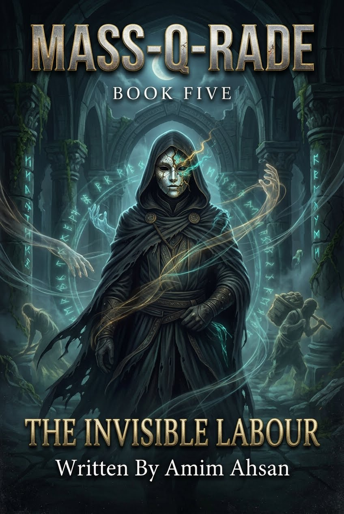

THE INVISIBLE WORKER
Li Wei & The Machine That Ate the Obedient
Worker 9104-Li is the most compliant man in the Suzhou Megafactory: 4.2 seconds per circuit board, no complaints, no opinions, no soul left to detect. That is exactly why Mass-Q-Rade chooses him. When he learns the state has scheduled his own liquidation, the invisible man becomes The Invisible Worker — the key that unlocks the machine from the inside and turns absolute obedience into absolute rebellion.
Complete 55-Chapter Directory
Browse summaries, settings, word counts, and key scenes across Parts I, II, III, IV, and V — from Station 404 to the bottom of the East China Sea.
BIO-SPOOF & TELEMETRY CONSOLE
Interactive terminal simulating the nanotech sub-dermal interface and TIAN-GRID administrative override protocols.
Character & Key Figure Dossiers
Profiles for Worker 9104-Li / The Invisible Worker, Zhang, Senior Director Chen, Officer Zhao, Sun Lin, Chen Kang, and Q.
Narrative Arc Timeline (2026)
From Station 404 to the ocean floor and the Western Basin — seventy-two hours that broke a machine.